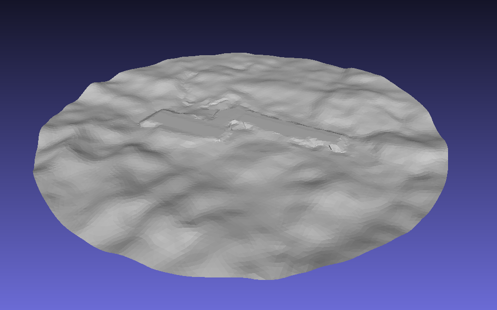
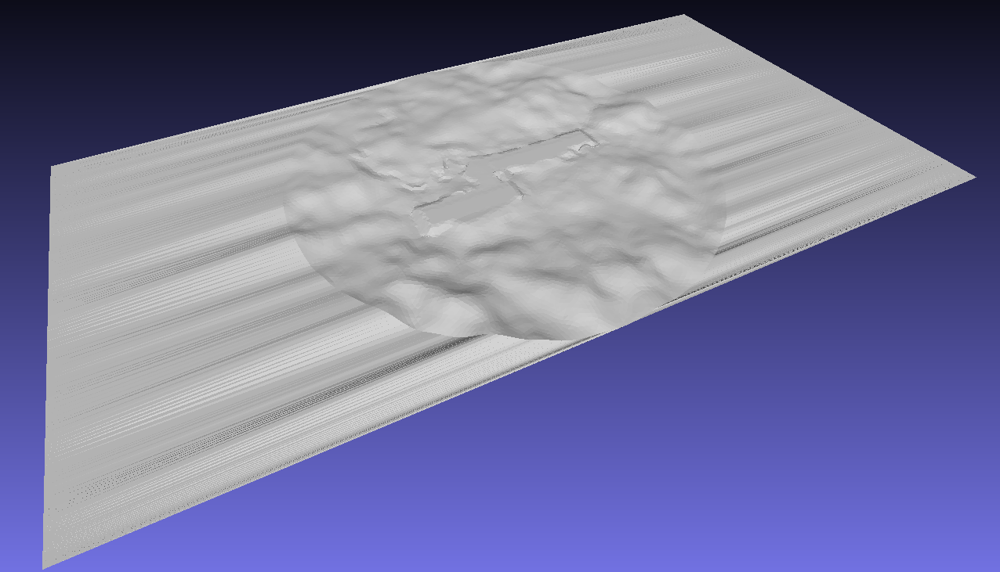

Loft#
The Loft module is used to extend the geometry of the terrain, used in CFD Simulations. The loft extension is essential to guarantee that the terrain starts from a straight line. Otherwise it would affect the wind flow.
Use Case#
The loft geometry is generated in the pre-processing step of the CFD simulations. In order to use the loft module, the terrain surface artifact, from the landscaping project must be generated beforehand.
The process of loft generation and the rotation of the domain to simulate other wind source directions is simplified if the terrain surface has a cirular shape, but other shapes can be used. An example of the shape of the input terrain surface is shown below:
{kind=link}

Important
The user must guarantee that the terrain surface does not have a hole in it. Otherwise, the border detection will fail!
Artifacts#
The loft module also has to receive a configuration file containing the loft parameters. The loft parameters define the geometric properties of the output surfaces. An example of the configuration file is shown below:
reference_direction: [-1, 0, 0] # Optional. Default to [-1, 0, 0]
cases:
default:
loft_length: 1200 # Minimal distance between loft end and the terrain
mesh_element_size: 25.0 # Target element size after remeshing the surfaces
wind_source_angle: 45 # Rotation angle of the reference direction around z axis
upwind_elevation: 780 # Value for the z coordinate of the loft
longer_loft:
loft_length: 1500 # Minimal distance between loft end and the terrain
mesh_element_size: 25.0 # Target element size after remeshing the surfaces
wind_source_angle: 270 # Rotation angle of the reference direction around z axis
upwind_elevation: 780 # Value for the z coordinate of the loft
Calling the loft module will generate the following files:
Upwind and downwind lofts: Untreated generated loft surfaces.
Upwind and downwind remeshed lofts: Remeshed loft surfaces with target element size.
Terrain remeshed: Remeshed terrain surface with target element size.
An example of the expected output file is shown below:
{kind=link}

Usage#
To invoke and generate loft surfaces, the following command can be used:
uv run python -m cfdmod.loft \
--config {CONFIG_PATH}
--surface {TERRAIN_PATH} \
--output {OUTPUT_PATH} \
Another way to run the generation, is through the notebook